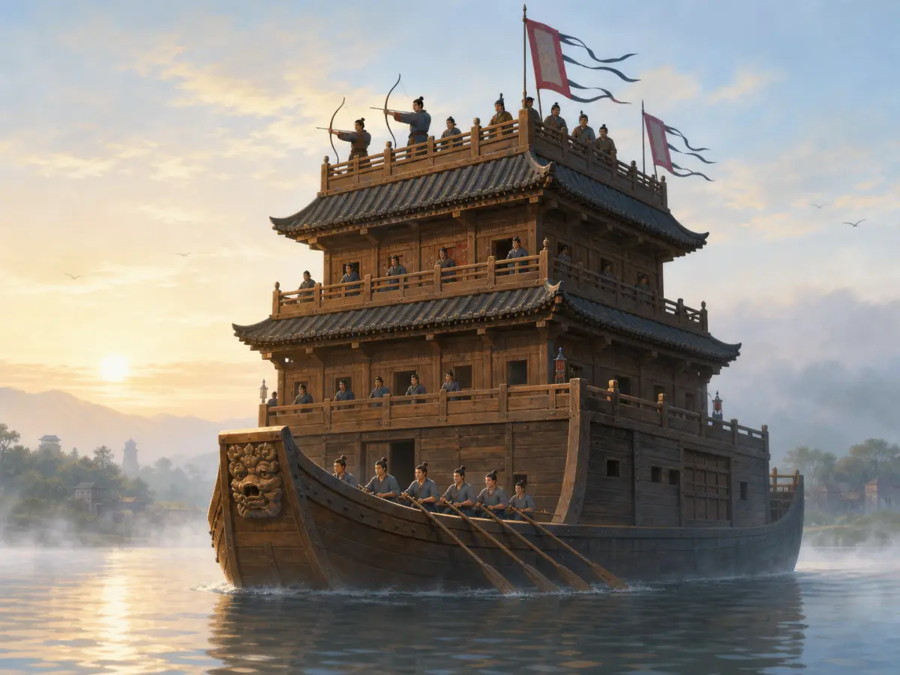
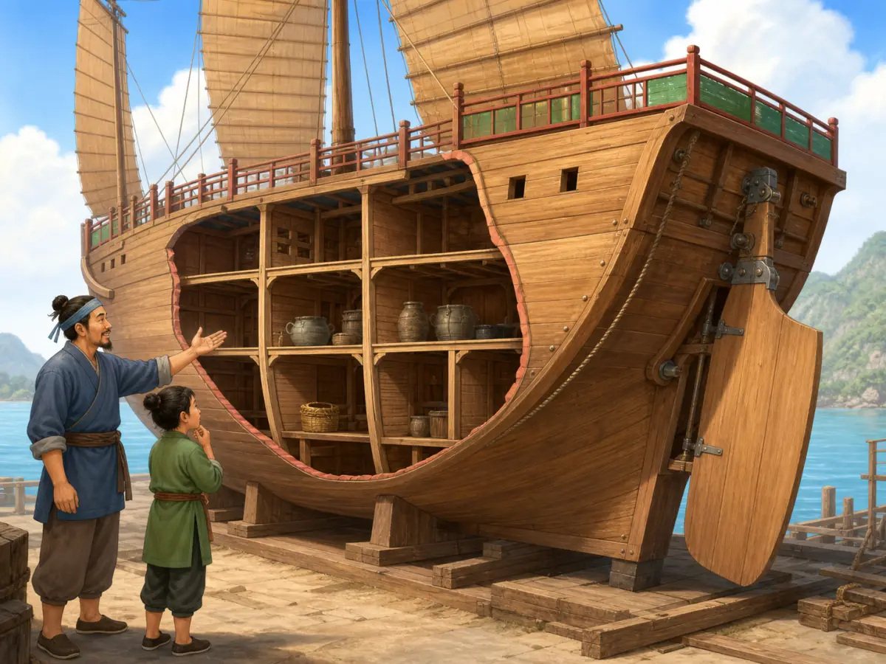
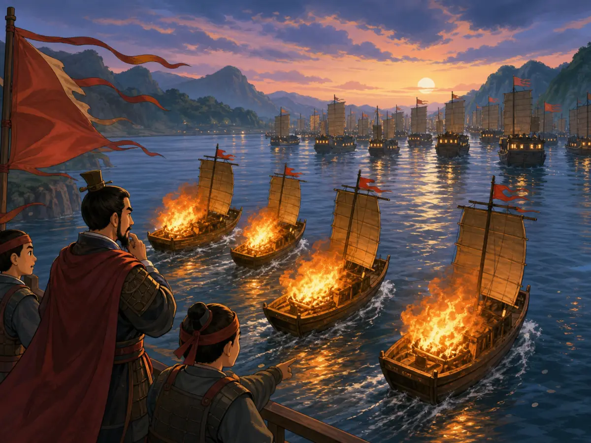
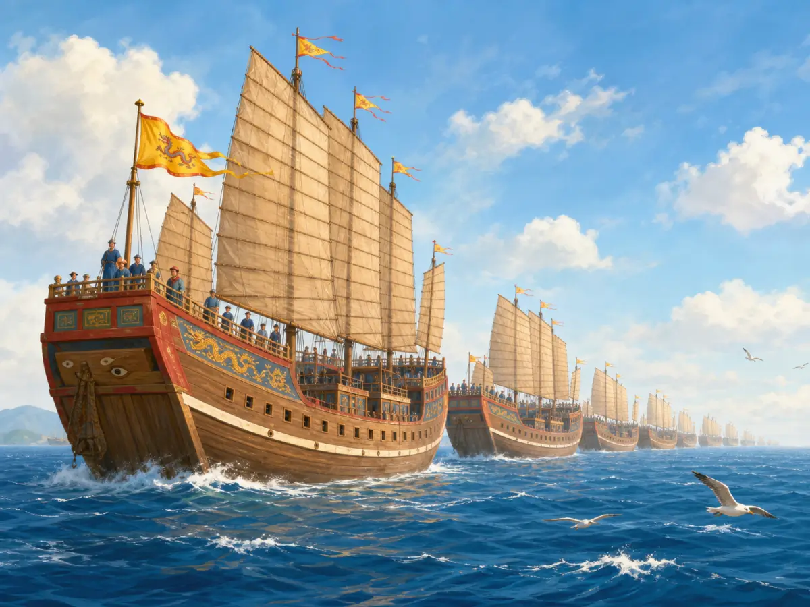

古代战船：怎样从证据读懂一艘船
Ancient Warships: Reading the Evidence
阅读难度 · 困难Reading level · Hard
Page 1
先别急着相信大船图
Don't Trust the Picture Yet

This is a modern imagined scene, not an ancient blueprint. It suggests the drama of a tower ship but cannot prove its exact decks, oars, or weapons.
想象你在博物馆里看到两件东西：一只是两千年前放进墓里的陶船，另一幅却是今天画家画的巨大战船。哪一件更接近证据？陶船确实来自古代，但它可能是缩小、简化的随葬品；现代图画很生动，却把许多没有答案的地方都替我们填好了。
研究古船就像拼一艘缺了许多块的船。古书保存船名和战斗记录，陶船、铜器图像让我们看见当时人怎样表现船，沉船残骸则留下木板、隔舱和真实尺寸。每一种证据都会说话，也都有说不到的地方。
汉代的文字和器物中已经可以找到楼船。这个名字让人想到船上高起的楼层或战斗平台，士兵站得高，观察和射击都可能更方便。可是现有证据并不能替公元前五世纪的某艘楼船画出“五层甲板、三排船桨”的精确结构；眼前这座“水上城堡”，更适合看作现代人根据古代线索做出的想象。
Imagine finding two ships in a museum. One is a clay model placed in a tomb almost two thousand years ago. The other is a colorful picture painted by a modern artist. Which one is evidence? The clay boat truly comes from ancient times, but it may be a small and simplified burial object. The modern painting is exciting, but the artist had to fill in many details that no one actually knows.
Studying an ancient ship is like rebuilding a boat when many pieces are missing. Old texts preserve ship names and battle reports. Clay models and pictures on ancient objects show how people represented ships. Shipwrecks can preserve real planks, compartments, and measurements. Each kind of clue tells us something, but none tells us everything.
Texts and objects from the Han dynasty mention or show louchuan, usually translated as “tower ships.” The name suggests raised structures or fighting platforms where soldiers could watch or shoot from above. The evidence does not, however, give us a proven fifth-century-BCE ship with exactly five stories and three rows of oars. The “floating fortress” in this picture is best understood as a modern reconstruction inspired by ancient clues.
Page 2
陶船和沉船留下了什么
What Models and Wrecks Leave Behind

This modern teaching image makes compartments and a stern rudder easy to see, but it is not a reconstruction of one excavated ship.
一只东汉陶船的船尾，可以看见类似舵的装置。它是中国很早的船尾舵图像证据，却不是从水底捞出的真舵，更不能说明世界上其他地方从前不会控制船的方向。许多水手早就会用操舵桨等办法转向；中国造船史特别重要的一点，是很早出现了把舵装在船尾的证据，后来又发展出不同形状和大小的舵。
隔舱的证据也要按年代慢慢看。江苏如皋出土的唐代木船，被上海交通大学董浩云航运博物馆介绍为目前所知较早的水密隔舱考古实例。泉州的南宋海船和“南海一号”沉船，更直接保存了横向木板：船身被分成一格一格，进水不容易立刻扩散到全船，木板也能帮助加固船体、整理货物。它提高了安全性，却不是保证船“永远不会沉”的魔法。
而山东蓬莱发现的一艘元代沉船，让战船的样子变得更具体。残存船体约二十八米长，研究者辨认出十四个舱位，还发现了刀、火器和弹药，因此把它解释为一艘便于近海行动的战船。和陶船或文字相比，沉船能给出更硬的结构证据；可它只能证明这艘船和这个时代，不能自动说明所有汉代楼船也长得一样。
An Eastern Han clay boat has a rudder-like device at its stern. It is very early Chinese evidence for a stern-mounted rudder, but it is still a model, not a full-size rudder raised from a wreck. It also does not mean that people elsewhere had been unable to steer. Sailors in many places used steering oars and other devices. What makes the Chinese evidence important is its early picture of a rudder at the back of a vessel and the many stern-rudder designs that developed later.
The evidence for watertight compartments must also be followed through time. A Tang dynasty wooden boat excavated at Rugao in Jiangsu is described by Shanghai Jiao Tong University's maritime museum as the earliest known archaeological example. Later wrecks, including the Southern Song ship from Quanzhou and the Nanhai No. 1, preserve rows of crosswise wooden bulkheads. They divided the hull into sections, so a leak was less likely to flood the whole ship at once. The bulkheads could also strengthen the hull and help organize cargo. They improved safety; they did not make a ship magically unsinkable.
A Yuan dynasty wreck found at Penglai in Shandong gives us a more direct look at a warship. About twenty-eight meters of its hull survived. Researchers identified fourteen compartment positions as well as swords, firearms, and ammunition, and they interpret the narrow vessel as a warship suited to quick movement near the coast. A wreck provides firmer structural evidence than a painting or a name in a book. Even so, it tells us about this ship and its period - not the exact design of every earlier tower ship.
Page 3
赤壁：史书里有什么，小说加了什么
Red Cliffs: History and Storytelling

A modern imagining of the Red Cliffs fire attack. Early sources mention fire ships and strong wind, but they do not preserve every ship, person, or position shown here.
船不仅要能航行，还要能作战。较高的平台可以帮助士兵观察和发射弓弩，古书里也记录过名叫拍竿的撞击装置。不过，没有一件完整的拍竿保存到今天。后来的人根据文字推测它可能借助长杆、重物和绞车打击靠近的敌船，但复原方法不止一种；“从五层楼船顶端放下一块巨石，一击砸穿小船”并不是已经证实的场面。
公元208年的赤壁之战，更能说明怎样读史书。陈寿所写的《三国志》记载，曹操军中发生疾病，第一次交战失利后退到长江北岸。黄盖看出曹军船只“首尾相接”，便准备装着干草和油脂的轻快战船，假装投降，接近后点火。当时风势很猛，火焰烧到船只和岸上的营地，曹操随后撤退。
这个历史核心已经十分惊险，可后来的故事又加上了更多细节。《三国志》的一条后注所引《江表传》明确写到“东南风急”；更晚的小说《三国演义》则把铁索连船、士兵晕船、庞统献计和诸葛亮“借东风”连成一场精彩大戏。因此，我们可以说火攻、强风和相接的船有早期史料依据，却不能把小说里的每一根铁链和每一阵风都当成现场记录。文学让赤壁活在许多人的想象里，史学则提醒我们给证据画出边界。
A warship had to do more than float. Raised platforms could help soldiers watch the water and fire bows or crossbows. Old texts also describe a striking device called a paigan. No complete paigan survives, however. Modern researchers have suggested machines using long beams, heavy weights, and winches, but there is more than one possible reconstruction. The familiar scene of a giant stone dropping from the top of a five-story ship and crushing a smaller boat in one blow is not a proven fact.
The Battle of Red Cliffs in 208 CE offers an even better lesson in reading evidence. Chen Shou's early history, the Records of the Three Kingdoms, says that illness spread through Cao Cao's army. After losing an early clash, Cao's forces withdrew to the north bank of the Yangtze. Huang Gai noticed that Cao's ships were joined or lined up bow to stern. He prepared fast vessels packed with dry grass and oil, pretended to surrender, and set them on fire as they approached. A powerful wind drove the flames into the ships and camps, and Cao Cao retreated.
That historical core is already dramatic, but later storytellers added more. An early work quoted in a later note to the history specifically mentions a strong southeast wind. Centuries afterward, the novel Romance of the Three Kingdoms wove iron chains, seasick troops, Pang Tong's trick, and Zhuge Liang “borrowing the east wind” into one unforgettable drama. We can say that fire ships, strong wind, and connected vessels have early written support. We cannot treat every chain and clever conversation in the novel as an eyewitness report. Literature kept Red Cliffs alive in people's imaginations; history asks us to mark where the evidence ends.
Page 4
郑和的船队不是一种船
Zheng He's Fleet Was Not One Kind of Ship

This modern image makes Zheng He's fleet look grand and uniform. The real fleet used ships for different jobs, and the size of the largest treasure ships remains debated.
到了明代，郑和在1405年至1433年间率领船队七次远航，航线穿过东南亚和印度洋，最远到达非洲东海岸一带。不过，把这些船全叫“宝船”或“战船”都会漏掉重要事实。资料中出现了执行不同任务的船：有的用于指挥或装载珍贵物品，有的运粮、运马或载人，也有负责作战和护卫的船。它更像一座移动的海上营地，航海、补给、外交、贸易和武力都在其中。
这也不是一支从未使用武力的“纯和平船队”。它进行朝廷交往和物品交换，也曾卷入冲突，在斯里兰卡等地采取军事行动。认识这一点，并不会抹掉船队跨越海洋的成就；它只是让我们看见，明朝的远航同时带着礼物、命令、商货和军队。
最大的宝船究竟多大，是另一块没有拼好的船板。后来的《明史》留下了极大的尺寸，换算后常被说成一百多米长；许多研究者认为这样的数字在木船工程上有疑问，而且较早的亲历记录没有给出相同尺寸。由于没有一艘完整宝船沉船能替我们量尺，学界至今没有统一答案。最诚实的说法不是选出一个最惊人的数字，而是承认：船队规模庞大、组织复杂，最大船只的准确尺寸仍在讨论。
现在再回头看第一张“大船图”，你也许会多问一句：“画家的哪一笔有证据？”陶船让我们看到早期船形，沉船保留真实结构，史书记录战斗，小说保存文化记忆。读懂古代战船，不是把传说全部赶走，而是知道什么时候在看木板，什么时候在读记录，什么时候正随着故事家的风驶进想象。
During the Ming dynasty, Zheng He commanded seven voyages between 1405 and 1433. His fleets crossed Southeast Asian waters and the Indian Ocean and reached the coast of East Africa. Yet calling every vessel a “treasure ship” or a “warship” hides an important fact. Records describe ships with different jobs: some served as command or treasure vessels, some carried grain, horses, supplies, or people, and others carried troops or guarded the fleet. Together they formed something like a moving camp at sea, combining navigation, supply work, diplomacy, trade, and military power.
The voyages were not a completely peaceful journey that never used force. The fleets carried gifts and took part in court diplomacy and exchange, but they also became involved in conflicts and used military force in places such as Sri Lanka. That does not erase their extraordinary achievement in crossing the ocean. It gives us a fuller picture of a Ming expedition carrying presents, officials, trade goods, orders, and soldiers at the same time.
The size of the largest treasure ships is another missing piece. A later official history gives enormous measurements that are often converted to more than one hundred meters in length. Many researchers question whether a wooden ship of that size was practical, and earlier accounts by people connected with the voyages do not give the same measurements. No complete treasure-ship wreck has survived for us to measure, so scholars still disagree. The most honest conclusion is not the most spectacular number: the fleets were large and impressively organized, while the exact size of their biggest ships remains unsettled.
Now return to the giant ship in the first picture. You might ask a new question: “Which parts did the artist have evidence for?” Models show how ancient people pictured ships. Wrecks preserve real structures. Histories record battles, and novels preserve cultural memory. Understanding an ancient warship does not mean throwing every legend away. It means knowing when we are looking at wood, when we are reading a record, and when a storyteller's wind is carrying us into imagination.
小结
Summary
古代战船的历史，不是一张从头到尾都清楚的设计图。楼船、船尾舵、水密隔舱、赤壁火攻和郑和船队，各自留下了不同强弱的证据。真正有趣的发现，不只是“大船多厉害”，而是学会把出土实物、历史记录、合理推测和文学传奇放在正确的位置。
The history of ancient warships is not one perfectly preserved blueprint. Tower ships, stern rudders, watertight compartments, the Red Cliffs fire attack, and Zheng He's fleets each left different kinds of evidence. The most interesting discovery is not simply that the ships were powerful. It is learning to place objects, written records, careful guesses, and literary legends where each belongs.